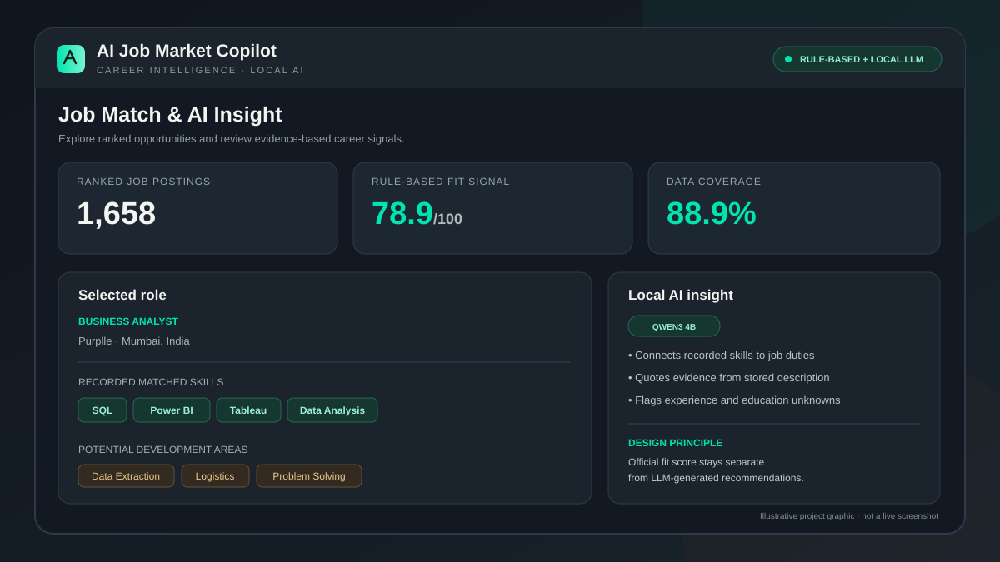

Job exploration
Search and filter a dataset of 1,658 ranked postings. Synonym handling broadens related-term matching; it is not embedding-based semantic search or a live job feed.
Explainable Job Matching, Skill Gap Analysis & Local AI Career Insights
A local-first career intelligence prototype that helps users explore a ranked set of job postings, understand recorded skill-match signals, and review requirements that still need verification. It combines a Python scoring workflow with contextual analysis generated locally through Ollama and Qwen3 4B.
Demo availability depends on the host laptop, Streamlit, Ollama, and ngrok staying online.

01 / Problem
A ranked list can help narrow opportunities, but a score alone does not explain which recorded skills overlap with a role, which areas deserve review, or what important requirements are missing from the available data. The project explores how to make those signals easier to inspect without presenting an AI-generated opinion as verified fact.
02 / What I built
Search and filter a dataset of 1,658 ranked postings. Synonym handling broadens related-term matching; it is not embedding-based semantic search or a live job feed.
Display the rule-based fit score, data coverage, experience-fit estimate, recorded matched skills, and potential development areas for a selected role.
Use a locally running Qwen3 4B model via Ollama to connect recorded candidate skills to responsibilities in the stored job description and propose practice actions and hypothetical interview questions.
Surface missing or uncertain requirements so users can distinguish recorded signals from conclusions that still require verification.
03 / Snapshot
Ranked job postings available in the current dataset.
Initial global shortlist count in the current application summary; this is a ranking output, not a hiring outcome.
Postings marked “Needs Review” in the current summary.
Contextual insights are generated through an Ollama endpoint running on the user's machine; no paid LLM API key is required for that local workflow.
04 / Design decision
05 / Validation
The local workflow was reviewed using two contrasting roles: Business Analyst at Purplle and Senior Data Analyst at Introhive. These examples exercise different responsibilities and seniority context. Offline grounding tests and a local QA script were also run. This is representative testing, not exhaustive validation of all 1,658 records or a benchmark of hiring outcomes.
06 / Limitations
07 / Next steps
The next improvements would be broader, documented validation across a varied sample of job descriptions, clearer evaluation criteria for contextual relevance, and a privacy-safe, licence-compliant source-code release. The current version prioritizes explainability and careful treatment of missing data over claiming automated hiring accuracy.